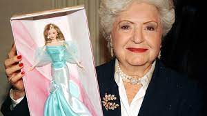

história
Barbie é uma boneca utilizada como brinquedo infantil, criada pela empresa americana Mattel em 9 de março de 1959.Criada pela empresária Ruth Handler, a boneca originalmente seria baseada na boneca alemã Bild Lilli, que mais tarde foi comprada pela Mattel.
A Barbie é a protagonista de uma marca de bonecazs e acessórios da Mattel, contando com outros membros da família e modelos de bonecas colecionáveis. A boneca tem sido influente na indústria de brinquedos por mais de sessenta anos, além de ter sido alvo de controvérsias e processos judiciais referentes a sua aparência e estilo de vida. A Mattel já vendeu mais de bilhões de bonecas Barbie, tornando-a a linha de produtos mais lucrativa da empresa.
A marca de bonecas expandiu-se para uma franquia de mídia com o lançamento de uma série de filmes de animação, iniciada em 2001. Além dos filmes, tornou-se um veículo para a venda de outras mercadorias como roupas, série de animação, jogos eletrônicos entre outros produtos.
As vendas de bonecas Barbie começaram a cair acentuadamente entre 2014 e 2016. Em 2020, a Mattel vendeu US$ 1,35 bilhão em bonecas e acessórios da marca e este foi seu melhor crescimento de vendas em duas décadas, um aumento de US$ 950 milhões em comparação ao ano de 2017.